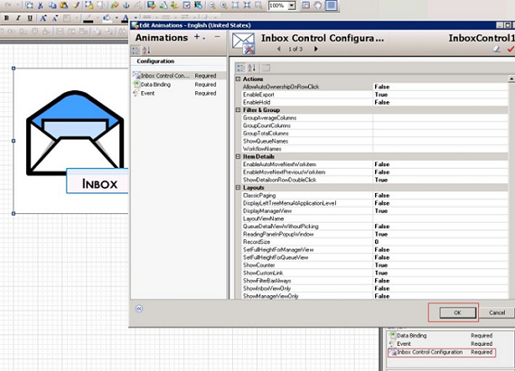
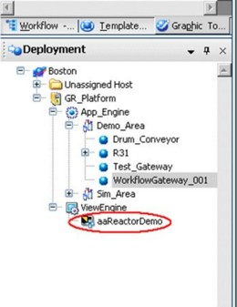
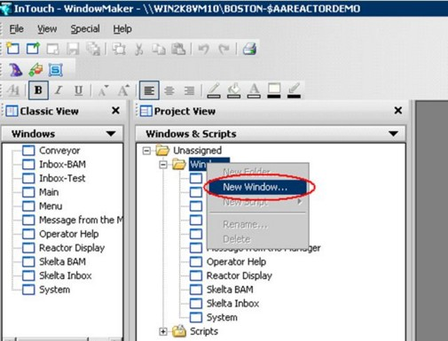
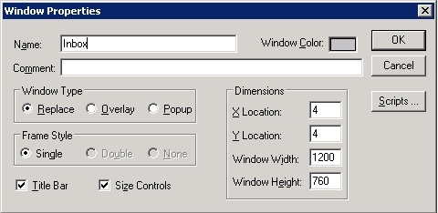
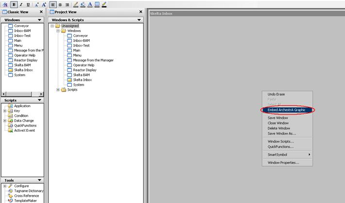
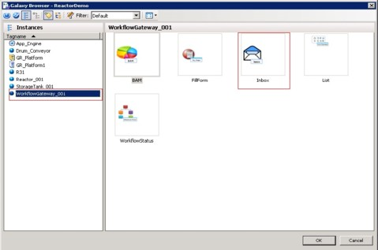
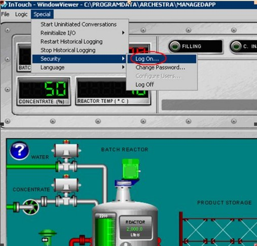
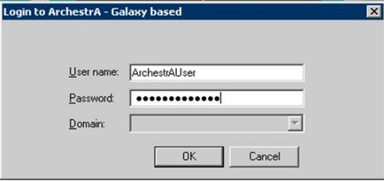
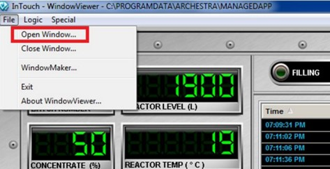
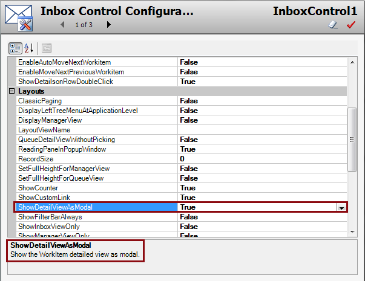

No
Using Inbox Inside InTouch
Follow steps 1-7 listed in the Initial Steps and continue:
- Select the control in the editor.
The Edit Animations window appears.
- In the Animations pane, double-click and open Inbox Control Configurations.
A new configuration page appears. You can configure the Inbox Control in this page.
- After configuring the Inbox, click OK.
- Save and close the editor.

- Select the instance and deploy in the ArchestrA IDE.

- Double-click the $InTouchViewApp instance (aaReactorDemo) under ViewEngine from the ArchestrA IDE.
The InTouch - WindowMaker window appears.

- Create a new window for the Inbox control.
- Provide the name and size for the window.

- Right-click inside the newly opened window, and then select Embed ArchestrA Graphic.
The ArchestrA Galaxy Browser appears.

- Select the Instances tab, and then select the object to which the graphic symbol is added. Select the name of the required graphic object (Inbox).

- Enable security for the Inbox window, if required.

- Save the window and exit InTouch WindowMaker.
- Save and close the object in the ArchestrA IDE.
- Deploy the $InTouchViewApp instance.
- Open the InTouch Viewer.
- Click Special, click Security, and then click Log On.
The login dialog box appears.


- Enter the credentials, and then click OK.
- Open the Inbox (the one created) window from the file menu.
The Inbox Control loads in the window.


Modal or Modaless Window Property
When you click a work item to edit, you can choose the editor to appear as a modal window or a modaless window. Change the value of the parameter, ShowDetailViewAsModal to True if you want the editor to open as a modal window, as shown in the following image:

Note: The Inbox Control size must be more than the size of the Work Item Detail View modal window.